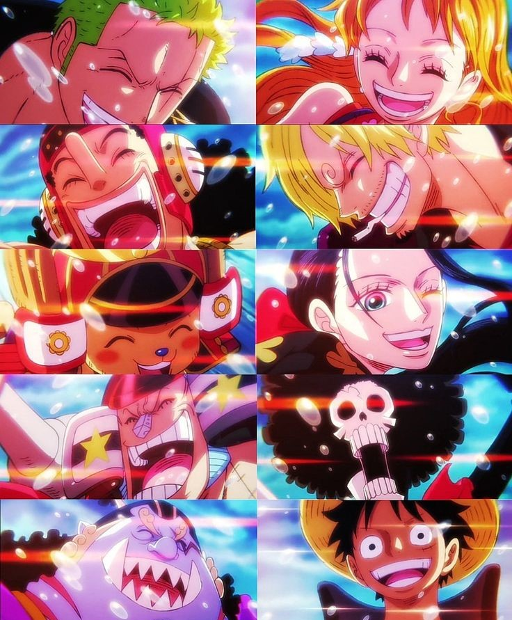
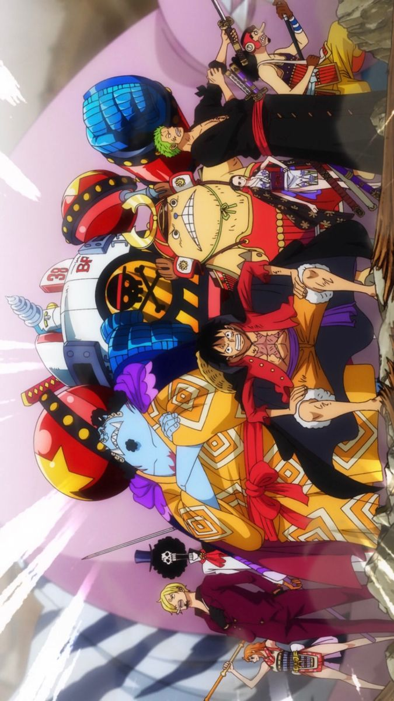

One Piece
Es una serie de manga y anime creada por Eiichiro Oda. Se considera uno de los mangas más populares y exitosos de todos los tiempos. La historia sigue las aventuras de Monkey D. Luffy, un joven pirata con habilidades elásticas después de comer una fruta del diablo, y su tripulación, conocida como los Piratas del Sombrero de Paja.
La trama se desarrolla en un mundo ficticio dominado por los piratas, donde existen poderes sobrenaturales, tesoros legendarios y un vasto océano llamado el "Grand Line". Luffy se embarca en una búsqueda épica para encontrar el tesoro supremo conocido como "One Piece", dejado por el antiguo Rey de los Piratas, Gol D. Roger. Este tesoro está ubicado en la isla legendaria de Laugh Tale.
{kind=link}
A lo largo de la historia, Luffy recluta a nuevos miembros para su tripulación y se enfrenta a una gran variedad de enemigos poderosos, incluidos otros piratas, la Marina Mundial (la organización que persigue y detiene a los piratas) y los Yonkou (los cuatro emperadores piratas más poderosos). One Piece es conocido por su narrativa épica, personajes memorables, emocionantes escenas de acción y una trama llena de misterios y giros. Explora temas como la amistad, la lealtad, la superación personal y los sueños. La serie ha sido elogiada por su creatividad, humor y profundidad emocional.

{kind=link}
El manga de One Piece se ha publicado desde 1997 y el anime se emitió por primera vez en 1999. La serie ha inspirado películas, especiales de televisión, videojuegos y una gran cantidad de mercancía. A medida que la historia avanza, se desvelan secretos sobre el mundo, la historia y los personajes de One Piece, creando un universo rico y fascinante para los fanáticos.

{kind=link}